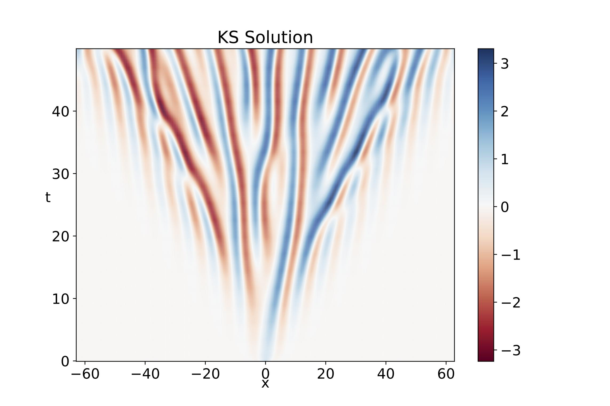

Research Projects
My research combines artificial intelligence, statistical inference, and computational modelling to address challenges in scientific discovery, ecological monitoring, and global health.
 |
AI-Enabled Mosquito Surveillance and Ecological Inference Developing AI-enabled bioacoustic approaches to connect mosquito acoustic observations with behavioural activity, ecological indicators, and potential applications in public health surveillance. Bioacoustics · Ecological Monitoring · Global Health |
| Metadata Shortcut Learning in Acoustic Classification Investigating how contextual metadata influence machine learning predictions, model robustness, and cross-domain generalization in mosquito acoustic classification. Trustworthy AI · Domain Generalization · Multimodal Learning |
| Uncertainty-Aware Ecological Inference Developing probabilistic statistical frameworks to account for classification errors, temporal dependencies, and observation uncertainty in continuous acoustic monitoring. Bayesian Inference · Uncertainty Quantification · Ecological Statistics |
|
 |
Scientific Machine Learning for Infectious Disease Dynamics Exploring hybrid approaches that integrate neural networks, differential equations, and statistical inference to model nonlinear disease transmission dynamics and estimate time-varying parameters. Neural Operators · Dynamical Systems · Scientific Machine Learning |
 |
Stochastic Modelling and Data Assimilation Investigating stochastic reaction–diffusion models and Bayesian data assimilation approaches to integrate observational data with mechanistic descriptions of spatiotemporal disease dynamics. Stochastic Differential Equations · Bayesian Inference · Data Assimilation |
©Copyright 2026 Michael Färber. Powered by Jekyll/al-folio. Imprint · Privacy